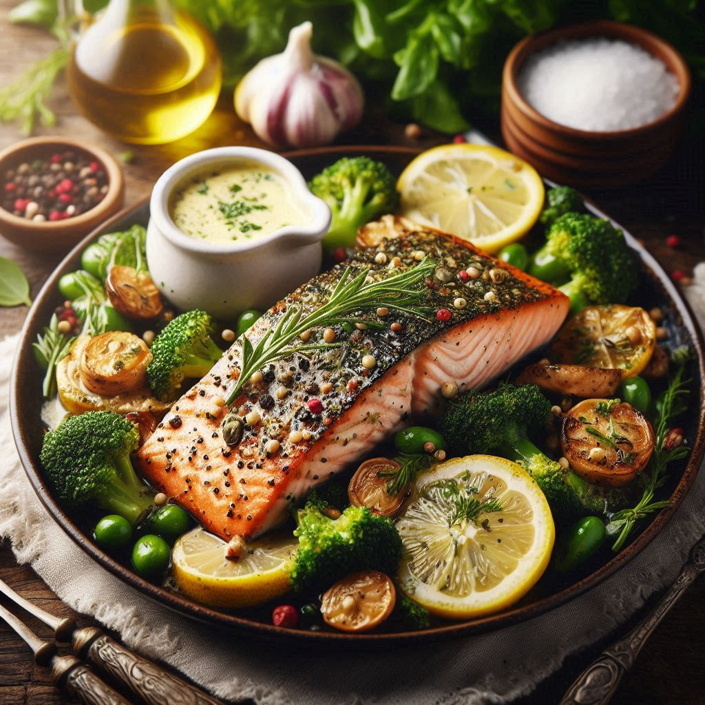

Herb-Crusted Salmon with Lemon Butter Sauce
This Herb-Crusted Salmon with Lemon Butter Sauce is sure to impress your guests with its flavorful and elegant presentation. Enjoy your culinary adventure! If you need more recipes or any other assistance, just let me know.
For salmon:
- 4 salmon fillets (6 oz each)
- 2 tablespoons olive oil
- 2 tablespoons Dijon mustard
- 1/2 cup panko breadcrumbs
- 1/4 cup grated Parmesan cheese
- 2 tablespoons finely chopped fresh parsley
- 2 tablespoons finely chopped fresh dill
- Zest of 1 lemon
- Salt and pepper to taste
For Sauce:
- 1/4 cup unsalted butter
- 1 clove garlic, minced
- Juice of 1 lemon
- 1/4 cup heavy cream
- Salt and pepper to taste
Instructions
- Prepare the Salmon:
- Preheat your oven to 400°F (200°C). Line a baking sheet with parchment paper or lightly grease it.
- In a small bowl, mix together the panko breadcrumbs, Parmesan cheese, parsley, dill, and lemon zest. Set aside.
- Pat the salmon fillets dry with paper towels. Season each fillet with salt and pepper.
- Brush the top of each salmon fillet with a thin layer of Dijon mustard.
- Press the breadcrumb mixture onto the mustard-coated side of the salmon fillets, ensuring an even layer.
- Bake the Salmon:
- Place the salmon fillets on the prepared baking sheet.
- Drizzle olive oil over the breadcrumb crust.
- Bake in the preheated oven for 12-15 minutes, or until the salmon is cooked through and the crust is golden brown.
- Prepare the Lemon Butter Sauce:
- While the salmon is baking, melt the butter in a small saucepan over medium heat.
- Add the minced garlic and sauté for about 1 minute, until fragrant.
- Stir in the lemon juice and heavy cream.
- Reduce the heat to low and let the sauce simmer for 2-3 minutes, stirring occasionally.
- Season with salt and pepper to taste.
- Serve:
- Remove the salmon from the oven and let it rest for a minute.
- Spoon the lemon butter sauce over the salmon fillets.
- Serve the herb-crusted salmon with your choice of side dishes, such as roasted vegetables or a fresh salad.